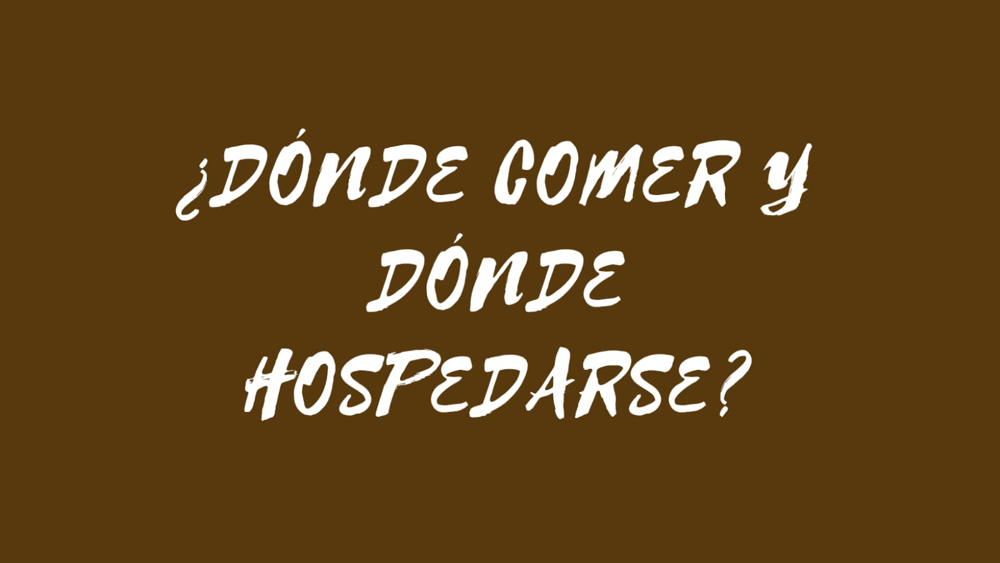

¿Qué es un pueblo mágico?
Según la secretaria de Turismo se le considera pueblo mágico a un sitio con símbolos y leyendas, poblados con historia que en muchos casos han sido escenario de hechos trascendentes para nuestro país, son lugares que muestran la identidad nacional en cada uno de sus rincones, con una magia que emana de sus atractivos.
Insertar imagen de pueblo mágico.


Elementos que se SECTUR toma en cuenta para nombrar a los Pueblos Mágicos:
- Tener una población de 20mil habitantes como mínimo.
- No hallarse a más de 200km de un destino turístico principal.
- Constituir un Comité Pueblo Mágico formalmente.
- Tener un programa de desarrollo turístico local de cara a los próximos 3 años.
- Garantizar servicios de salud y seguridad pública para el turista.
- Evidenciar el atractivo simbólico o cultural de la localidad.

¿Cómo conservar el título de Pueblo Mágico?
- Mantener un Comité Pueblo Mágico activo y al día en sus resoluciones.
- Llevar a cabo con normalidad los planes y programas turísticos pautados.
- Mantener los servicios logísticos, de salubridad y seguridad necesarios para proteger al turista.
- Garantizar el funcionamiento de un Sistema de Información Estadística.
- Sopesar el impacto del desarrollo turístico en la comunidad.
- Innovar en materia de catálogo de productos turísticos disponibles.
- Ofrecer un informe anual de actividades con lujo de detalles.

Martínez Montes Hanna Maritza Lara Avila Angely Daniela © 2021 Todos los derechos reservados